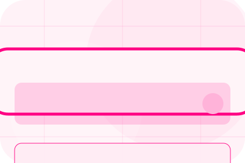
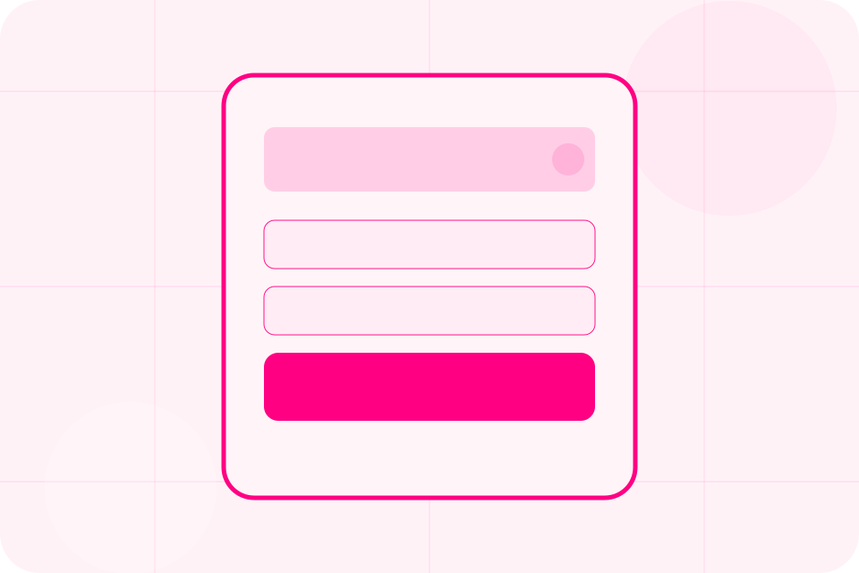
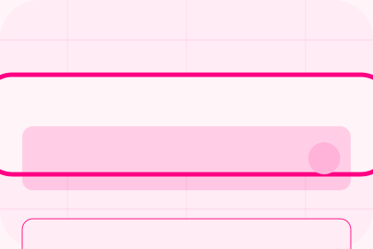

Role
The person, team, or specialist function connected to team is easy to understand.
Broker / 01
Broker opens as a clear insurance decision hub: what Shield offers, who it helps, why it matters, and which route to take first.
The first screen combines positioning, proof, primary action, and fast internal navigation, so people can act immediately or compare the rest of the broker route with context.
Friendly quote hero
Select the closest route and Shield keeps the next step, proof, and follow-up expectation aligned with family and asset protection.

Broker / 02
Independence adds professional context to the broker route, using the pink quote journey structure to support family and asset protection before visitors choose a next step.
Shield uses rounded policy cards and focused copy to make the decision easier to scan, aligning the section with family and asset protection rather than filling space.
Explore BrokerIndependence gives the page a specific angle instead of repeating the navigation label.
The rounded policy cards show what to compare, what to avoid, and what matters most for insurance, protection & risk cover visitors.
The final cue points to a useful internal route so the section keeps the journey moving.
Broker / 03
Partners gives the proof layer for broker: standards, evidence, and reassurance that make the next decision feel grounded.
Instead of relying on vague claims, Shield presents visible standards, process cues, and proof artifacts that help insurance visitors judge fit.
Explore BrokerVisible proof that helps visitors believe the claims behind partners.
The quality, safety, or operating expectation this section makes explicit.
What becomes clearer before someone decides whether to request a quote.
Broker / 04
Standards gives the proof layer for broker: standards, evidence, and reassurance that make the next decision feel grounded.
Instead of relying on vague claims, Shield presents visible standards, process cues, and proof artifacts that help insurance visitors judge fit.
Explore BrokerShield structures standards around evidence, standard, and a clear next route so visitors can compare the block quickly before they request a quote.
Request QuoteBroker / 06
Values adds professional context to the broker route, using the pink quote journey structure to support family and asset protection before visitors choose a next step.
Shield uses rounded policy cards and focused copy to make the decision easier to scan, aligning the section with family and asset protection rather than filling space.
Explore BrokerValues gives the page a specific angle instead of repeating the navigation label.
The rounded policy cards show what to compare, what to avoid, and what matters most for insurance, protection & risk cover visitors.
The final cue points to a useful internal route so the section keeps the journey moving.
Broker / 07
Regulation adds professional context to the broker route, using the pink quote journey structure to support family and asset protection before visitors choose a next step.
Shield uses rounded policy cards and focused copy to make the decision easier to scan, aligning the section with family and asset protection rather than filling space.
Explore BrokerRegulation gives the page a specific angle instead of repeating the navigation label.
The rounded policy cards show what to compare, what to avoid, and what matters most for insurance, protection & risk cover visitors.
The final cue points to a useful internal route so the section keeps the journey moving.
Broker / 08
Experience adds professional context to the broker route, using the pink quote journey structure to support family and asset protection before visitors choose a next step.
Shield uses rounded policy cards and focused copy to make the decision easier to scan, aligning the section with family and asset protection rather than filling space.
Explore BrokerExperience gives the page a specific angle instead of repeating the navigation label.
The rounded policy cards show what to compare, what to avoid, and what matters most for insurance, protection & risk cover visitors.
The final cue points to a useful internal route so the section keeps the journey moving.
Broker / 09
Trust gives the proof layer for broker: standards, evidence, and reassurance that make the next decision feel grounded.
Instead of relying on vague claims, Shield presents visible standards, process cues, and proof artifacts that help insurance visitors judge fit.
Explore BrokerShield structures trust around evidence, standard, and a clear next route so visitors can compare the block quickly before they request a quote.
Request QuoteBroker / 10
Shield closes the broker route with a clear action, a quick reminder of the value, and a low-friction way to request a quote.
Visitors who are ready can use the primary action. Visitors who are still comparing can scan the section links, proof, and support routes before they request a quote.
Request QuoteThe final block keeps the choice simple: act now, compare one more proof route, or send enough detail for a focused response.
Request Quotefamily and asset protection
A quote-first insurance site with pink action, chat-like steps, playful policy cards, and claims reassurance. Broker ends with a direct path to request a quote, plus enough context for visitors who still need to compare.

Request QuoteCover, claims, limits, and exclusions depend on policy wording and insurer assessment.